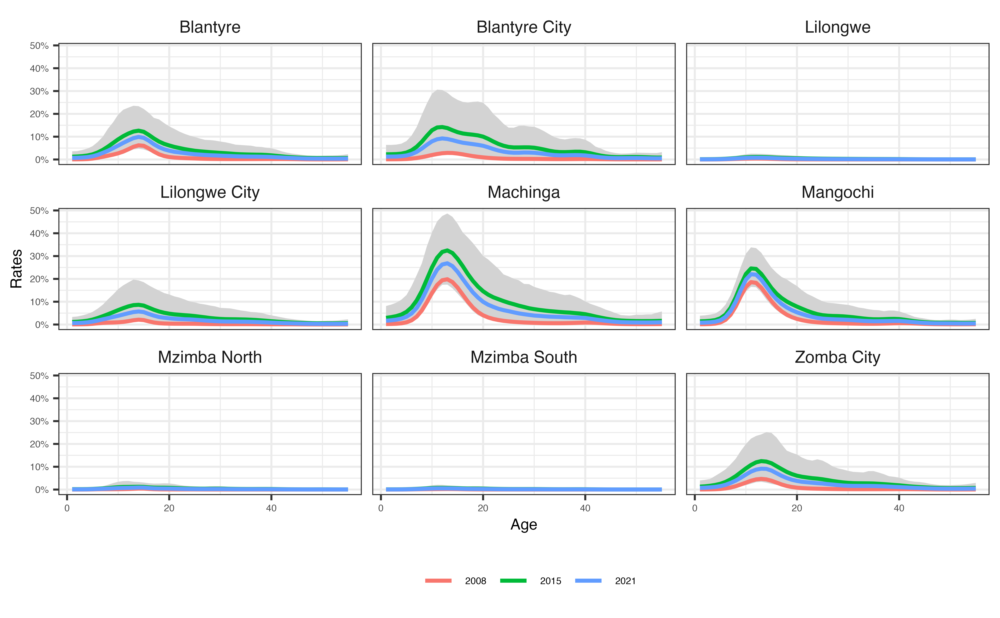

Introduction
This vignette serves as an introduction to threemc (or “Matt’s model for male circumcision”), a Bayesian multilevel spatio-temporal, competing-risks, time-to-event model for, unsurprisingly, male circumcision. It models the circumcision rate, but also computes circumcision incidence and cumulative incidence (i.e. circumcision coverage) [1].
Circumcision is split between two types (which form our “competing-risks”, along with being uncircumcised), medical male circumcision (MMC) and traditional male circumcision (TMC). The model is stratified by age, location and time, and also includes interaction terms between these variables.
threemc is implemented in Template Model Builder (TMB). TMB is an R package that enables users to flexibly fit latent process/variable models to data. It uses automatic differentiation and Laplace approximations to estimate posterior distributions for model parameters. The objective function produced by TMB can be called in R, and so can be optimised using e.g. stats::nlminb. TMB is particularly fast in comparison to other methods (e.g. INLA) when there are many random effects, such as are commonly found in spatio-temporal models like threemc. [1,2].
We will go through a simple threemc model of an example dataset for Malawi. It’s important to note that we only look at a subset of Malawi’s surveys here (not all are publicly available), so our results are not reliable and shouldn’t be taken as genuine predictions.
First, load the prerequisite packages, which won’t be too many beyond threemc itself.
# for analysis
library(dplyr, warn.conflicts = FALSE)
library(sf)
#> Linking to GEOS 3.10.2, GDAL 3.4.2, PROJ 8.2.1; sf_use_s2() is TRUE
library(threemc)
# for plotting
library(ggplot2)
library(scales)
# Revert to using planar rather than spherical geometry in `sf`
sf_use_s2(FALSE)
#> Spherical geometry (s2) switched offMetadata
Next, set the following metadata in our analysis:
cntry <- "MWI" # iso3 code for country to model
cens_age <- 59 # max circ. age to include in model, censor older ages
N <- 1000 # N samples from posterior predictive distribution
start_year <- 2008 # year to begin predictions
forecast_year <- 2021 # predictions up to this year
# PSNU area level for modelled country
area_lev <- threemc::datapack_psnu_area_level %>%
filter(iso3 == cntry) %>%
pull(psnu_area_level)
area_lev
#> [1] 5For this example, we will use the default “standard” threemc model, which does not include a time effect for TMC (i.e. it assumes that TMC practises don’t and won’t change over time), uses an AR 1 temporal process, and treats MMC for all ages as time varying. Models with these features will be introduced in a later vignette.
Note that threemc contains the dataset datapack_psnu_area_level, which contains the PSNU (“Primary Sampling Unit”) area level for surveys conducted in many Sub-saharan African countries. For Malawi, this is area level five, which corresponds to “Health District + Cities”. Each area level has a different meaning for each county, but in general, higher values correspond to more granular regions.
Data
Next, we load our required datasets. Note that this data is normally loaded using read_circ_data, which avoids having to switch between readr::read_csv and sf::read_sf, and makes repeated filtering more terse. However, the demo data we will use in this analysis is directly included in threemc, so we just explicitly assign it to the global environment from there.
#' # "Normal" data loading procedure (same for areas, surveys and pops)
#' filters = c("iso3" = cntry, "sex" = male)
#' survey_circumcision = read_circ_data(
#' path = "path/to/survey_circumcision",
#' filters = filters
#' )
survey_circumcision <- threemc::demo_survey_circumcision
areas <- threemc::demo_areas %>%
mutate(space = row_number()) # Add unique identifier for each area
populations <- threemc::demo_populationsFor more information on these datasets and what they contain, please see their respective help files (using e.g. help("demo_survey_circumcision)"). If you wish to fit a model using threemc with your own data, it must include the same columns as these datasets.
Prepare Survey Data
We now preprocess our survey data.
# pull latest censoring year from survey_id
survey_years <- unique(survey_circumcision$survey_id)
cens_year <- max(survey_years)
# Prepare circ data, and normalise survey weights and apply Kish coefficients.
survey_circ_preprocess <- prepare_survey_data(
areas = areas,
survey_circumcision = survey_circumcision,
area_lev = area_lev,
start_year = start_year,
cens_year = cens_year,
cens_age = cens_age
)
#> Uncircumised/right censored (event 0) Uncensored (event 1)
#> 21642 6260
#> Left censored (event 2)
#> 248
head(survey_circ_preprocess)
#> # A tibble: 6 × 25
#> iso3 survey_id area_id sex age dob_cmc interv…¹ indwe…² circ_…³ circ_…⁴
#> <chr> <chr> <chr> <chr> <dbl> <dbl> <dbl> <dbl> <dbl> <dbl>
#> 1 MWI MWI2010DHS MWI_5_22 male 7 1146 1327 0.730 1 6
#> 2 MWI MWI2010DHS MWI_5_24 male 7 1142 1328 0.768 1 6
#> 3 MWI MWI2010DHS MWI_5_33 male 8 1144 1327 4.98 1 7
#> 4 MWI MWI2010DHS MWI_5_18 male 8 1148 1328 2.42 1 7
#> 5 MWI MWI2010DHS MWI_5_21 male 8 1135 1326 1.42 1 7
#> 6 MWI MWI2010DHS MWI_5_19 male 8 1145 1329 1.44 1 7
#> # … with 15 more variables: circ_who <chr>, circ_where <chr>, year <dbl>,
#> # yob <dbl>, yoc <dbl>, area_name <chr>, area_level <dbl>, time1 <dbl>,
#> # time2 <dbl>, event <dbl>, type <chr>, indweight_st <dbl>, N <int>,
#> # Neff <dbl>, ratio <dbl>, and abbreviated variable names ¹interview_cmc,
#> # ²indweight, ³circ_status, ⁴circ_ageAmongst other things, prepare_survey_data:
- Removes rows with missing essential information (e.g. circumcision status), and identifies surveys which are completely excluded due to missing data,
- Censors circumcisions at cens_age and cens_year, for circumcision age and year, respectively,
- sets the desired area level of aggregation for each survey, reassigning surveys at a more granular level to the specified area_lev (e.g. MWI_6_309 (STA Tombondiya), a “Traditional Authority” is reassigned to it’s “Health District + Cities”, MWI_5_22 (Mulanje)),
- Identifies left (i.e. those circumcised at an unknown age, labelled with the column event == 1) and right (i.e. still uncircumcised, labelled with event == 2) censored individuals (those uncensored have event == 0),
- Uses circ_who and circ_where to determine circumcision type,
- Identifies surveys for which this type information is unavailable, and - normalises survey weights and applies the Kish coefficient.
In these Malawi surveys, we do see the presence of some left censoring, but thankfully every survey contains enough valid circumcision data to be used.
Create Shell Dataset
We wish to make predictions for each unique combination of:
- The area_ids in survey_circ_preprocess,
- circumcision age 0-max(survey_circ_preprocess$circ_age),
- circumcision years from start_year-forecast_year, and
- each type of circumcision (TMC, MMC and for “Missing” type, which can still be used when modelling Total MC).
To that end, we use create_shell_dataset to use our shapefiles and preprocessed surveys to create, well, a shell dataset!
out <- create_shell_dataset(
survey_circumcision = survey_circ_preprocess,
populations = populations,
areas = areas,
area_lev = area_lev,
start_year = start_year,
end_year = forecast_year,
time1 = "time1",
time2 = "time2",
strat = "space",
age = "age",
circ = "indweight_st"
)
head(out)
#> # A tibble: 6 × 15
#> area_id area_n…¹ area_…² space year circ_…³ time age popul…⁴ N obs_mmc
#> <chr> <chr> <dbl> <int> <dbl> <dbl> <dbl> <dbl> <dbl> <dbl> <dbl>
#> 1 MWI Malawi 0 1 2008 0 1 1 277849 0 0
#> 2 MWI Malawi 0 1 2009 0 2 1 282535. 0 0
#> 3 MWI Malawi 0 1 2010 0 3 1 284753 0 0
#> 4 MWI Malawi 0 1 2011 0 4 1 285406. 0 0
#> 5 MWI Malawi 0 1 2012 0 5 1 285823. 0 0
#> 6 MWI Malawi 0 1 2013 0 6 1 286093. 0 0
#> # … with 4 more variables: obs_tmc <dbl>, obs_mc <dbl>, cens <dbl>,
#> # icens <dbl>, and abbreviated variable names ¹area_name, ²area_level,
#> # ³circ_age, ⁴populationFor each of these unique combinations, create_shell_dataset also adds their respective population from populations, and calculates:
- N, the person years, - obs_mmc, obs_tmc obs_mc (representing those with “Missing” circumcision type), cens and icens, the observed rate of circumcision for each circumcision type, - Also the rate of right-censoring (uncircumcised) and left-censoring (unknown circumcision age).
Model Fit Matrices
The final step before fitting our model is to prepare our model data. The function threemc_prepare_model_data outputs a list, and calculates: - design matrices for fixed effects and temporal, age, space and interaction random effects, (the list elements with names beginning with X_ below), - integration matrices for selecting the instantaneous hazard rate (The IntMats),
- survival matrices for MMC, TMC, censored and left censored, and (the matrices labelled “A” (for the various types of circumcision), B (for right-censoring) and C (for left-censoring)). - the precision/adjacency matrix for the spatial random effect (Q_space).
# prepare_dataset for modelling
dat_tmb <- threemc_prepare_model_data(
out = out,
areas = areas,
area_lev = area_lev
)
#> although coordinates are longitude/latitude, st_intersects assumes that they
#> are planar
#> Warning: as(<matrix>, "dgTMatrix") is deprecated since Matrix 1.5-0; do
#> as(as(as(., "dMatrix"), "generalMatrix"), "TsparseMatrix") instead
#> rw_order = NULL, AR 1 temporal prior specified
names(dat_tmb)
#> [1] "X_fixed_mmc" "X_fixed_tmc" "X_time_mmc" "X_age_mmc"
#> [5] "X_age_tmc" "X_space_mmc" "X_space_tmc" "X_agetime_mmc"
#> [9] "X_agespace_mmc" "X_agespace_tmc" "X_spacetime_mmc" "IntMat1"
#> [13] "IntMat2" "A_mmc" "A_tmc" "A_mc"
#> [17] "B" "C" "Q_space" "type_info"The message returned by threemc_prepare_model_data informs us that we have implicitly chosen an AR 1 temporal prior here because we have not specified the rw_order parameter.
Fit Model
Now we can finally fit our model.
First, we initialise hyperparameter values using threemc_initial_pars. This uses the matrices in dat_tmb to create a named list of the initial hyperparameters needed for our threemc model. The defaults can be overridden by specifying the custom_init parameter with a named list of it’s own.
Next, we run threemc_fit_model, which uses TMB::MakeADFun to create an objective function (the negative log-likelihood) which can then be optimised by nlminb using BFGS. Using Monte Carlo sampling, we also draw N samples from the joint posterior distribution, conditional on the optimised hyperparameters [3].
# Initialise `threemc` hyperparameters
parameters <- threemc_initial_pars(dat_tmb)
# fit model with TMB and stats::nlminb optimiser
fit <- threemc_fit_model(
dat_tmb = dat_tmb,
parameters = parameters,
randoms = c(
"u_time_mmc", "u_age_mmc", "u_age_mmc_paed", "u_space_mmc",
"u_agetime_mmc", "u_agespace_mmc", "u_agespace_mmc_paed",
"u_spacetime_mmc",
"u_time_tmc", "u_age_tmc", "u_space_tmc", "u_agespace_tmc"
),
N = N
)
#> mod not supplied, mod used = Surv_SpaceAgeTime_ByType_withUnknownType
#> Creating TMB object with `TMB::MakeADFun`...
#> Optimising...
#> Warning in stats::nlminb(start = obj$par, obj = obj$fn, gr = obj$gr, control =
#> list(trace = 1), : NA/NaN function evaluation
#> Sampling...Be aware that this can take quite a long time. Just think of all the random effects, and interactions between these! You can model using lower area_lev for a faster fit time in a pinch.
names(fit)
#> [1] "par" "objective" "convergence" "iterations" "evaluations"
#> [6] "message" "par.fixed" "par.full" "obj" "sample"fit contains all the expected outputs from supplying TMB::MakeADFun objective function to stats::nlminb. Among other things, we can have a look at the optimised hyperparameters for our model:
fit$par
#> u_fixed_mmc u_fixed_tmc logsigma_age_mmc
#> -5.7829722 -8.3052738 0.2216365
#> logsigma_time_mmc logsigma_space_mmc logsigma_agetime_mmc
#> 0.4135557 0.3337643 -0.6627453
#> logsigma_agespace_mmc logsigma_spacetime_mmc logsigma_age_tmc
#> -0.6955086 -1.6808744 0.9233108
#> logsigma_space_tmc logsigma_agespace_tmc logitrho_mmc_time1
#> 0.4696310 1.2423358 2.9700754
#> logitrho_mmc_time2 logitrho_mmc_time3 logitrho_mmc_age1
#> 9.2987679 -12.7145536 2.1412024
#> logitrho_mmc_age2 logitrho_mmc_age3 logitrho_tmc_age1
#> -5.1282586 -12.7144787 0.7570581
#> logitrho_tmc_age2
#> -5.3282535Here logsigma and logitrho refer to variance and covariance hyperparameters, respectively.
We can also access N samples from the posterior predictive distribution for the following quantities:
names(fit$sample)
#> [1] "inc_mc" "inc_mmc" "haz_tmc" "cum_inc_mmc" "haz_mmc"
#> [6] "surv_mc" "cum_inc_mc" "cum_inc_tmc" "inc_tmc" "haz_mc"-
"rate_mmc", "rate_tmc", "rate", "surv"refer to the circumcision rates,
-
"inc_mmc", "inc_tmc", "inc", refer to the (non-cumulative) circumcision incidence, and
-
"cum_inc_mmc", "cum_inc_tmc", "cum_inc"refer to the cumulative incidence, i.e. the circumcision coverage.
These sample matrices have N columns, and their rows match up with the rows in out, for the modelled area_lev (so not at lower area levels). We can use the function compute_quantiles to compute lower, middle and upper quantiles (default c(0.025, 0.5, 0.975), but can be changed by specifying the probs argument) for the samples for each row in out (that has area_level == area_lev (five)).
# subset to specific area level and calculate quantiles for rates and hazard
out_spec <- compute_quantiles(out, fit, area_lev = area_lev)
out_spec %>%
# remove observed circ rate cols we already know about
select(-c(N:icens)) %>%
head()
#> # A tibble: 6 × 39
#> area_id area_name area_level space year circ_age time age popul…¹ rate_…²
#> <chr> <chr> <dbl> <int> <dbl> <dbl> <dbl> <dbl> <dbl> <dbl>
#> 1 MWI_5_01 Chitipa 5 67 2008 0 1 1 3764. 3.69e-5
#> 2 MWI_5_01 Chitipa 5 67 2009 0 2 1 3839. 4.42e-5
#> 3 MWI_5_01 Chitipa 5 67 2010 0 3 1 3880. 1.24e-4
#> 4 MWI_5_01 Chitipa 5 67 2011 0 4 1 3901. 1.33e-4
#> 5 MWI_5_01 Chitipa 5 67 2012 0 5 1 3917. 4.97e-4
#> 6 MWI_5_01 Chitipa 5 67 2013 0 6 1 3926. 2.51e-4
#> # … with 29 more variables: rate_mmcM <dbl>, rate_mmcU <dbl>, rate_tmcL <dbl>,
#> # rate_tmcM <dbl>, rate_tmcU <dbl>, rateL <dbl>, rateM <dbl>, rateU <dbl>,
#> # survL <dbl>, survM <dbl>, survU <dbl>, inc_mmcL <dbl>, inc_mmcM <dbl>,
#> # inc_mmcU <dbl>, inc_tmcL <dbl>, inc_tmcM <dbl>, inc_tmcU <dbl>, incL <dbl>,
#> # incM <dbl>, incU <dbl>, cum_inc_mmcL <dbl>, cum_inc_mmcM <dbl>,
#> # cum_inc_mmcU <dbl>, cum_inc_tmcL <dbl>, cum_inc_tmcM <dbl>,
#> # cum_inc_tmcU <dbl>, cum_incL <dbl>, cum_incM <dbl>, cum_incU <dbl>, and …The lower, middle and upper quartiles are labelled with “L”, “M” and “U”, respectively.
You can now save fit as an .RData file using save. However, this file is often very large (> 1GB). We can make the fit object much smaller using minimise_fit_obj, which just stores your dat_tmb and parameters in fit (under the names tmb_data and par_init, respectively) and removes fit$sample and fit$obj. This object is much smaller, and can be saved using saveRDS as an .rds file. The downside is that if we want to reload our fit_min at a later time, we must re-sample. However, this can be easily done using threemc_fit_model and supplying fit_min as the fit argument. This is treated with greater detail in the aggregation vignette.
# minimise fit object for saving
fit_min <- minimise_fit_obj(fit, dat_tmb, parameters)
names(fit_min) # no "sample" or "obj", but has "tmb_data" and "par_init"
#> [1] "par" "objective" "convergence" "iterations" "evaluations"
#> [6] "message" "par.fixed" "par.full" "tmb_data" "par_init"Interpretation
We can have a quick look at our model predictions by plotting some of our results. For the sake of brevity, we won’t go (too much) into differences in circumcision type here, and only look at total circumcision (MC). We’ll also have to cheat a little bit and look at only a subset of our modelled region, in order for the plots in this vignette to be readable when exported to HTML.
First, we look at circumcision rate for each “Health District + Cities” modelled for different (circumcision) ages. We also include several years to observe any changes over time.
# remove some years to show change more clearly
out_plot <- out_spec %>%
filter(
year %in% c(
start_year, ceiling((start_year + forecast_year) / 2), forecast_year
),
area_name %in% c(
"Blantyre", "Blantyre City", "Lilongwe",
"Lilongwe City", "Machinga", "Mangochi", "Mzimba North",
"Mzimba South", "Zomba City" # "Chiradzulu", "Mzuzu City", "Zomba"
)
)
ggplot(
out_plot,
aes(
x = age,
y = rateM,
ymin = rateL,
ymax = rateU,
group = as.factor(year),
colour = as.factor(year)
)
) +
geom_ribbon(fill = "lightgrey", colour = NA) +
geom_line(size = 1) +
# facet_wrap(. ~ area_name, ncol = 4) +
facet_wrap(. ~ area_name) +
labs(x = "Age", y = "Rates", colour = "") +
scale_y_continuous(labels = label_percent()) +
theme_bw() +
theme(
axis.text.x = element_text(size = 5),
axis.title.x = element_text(size = 8),
axis.text.y = element_text(size = 5),
axis.title.y = element_text(size = 8),
legend.text = element_text(size = 5),
legend.position = "bottom", # place legend on bottom
strip.background = element_rect(fill = NA, colour = "white") # col facets
)
#> Warning: Using `size` aesthetic for lines was deprecated in ggplot2 3.4.0.
#> ℹ Please use `linewidth` instead.
There is significant spatial heterogeneity in circumcision practises. However, we can see that there is not much heterogeneity when it comes to circumcision age, with the MC rate highest among those aged around 10-13 for every area with less than negligible circumcision. Circumcisions do not seem to occur for those over 30s.
In many areas (such as Lilongwe), there doesn’t seem to be a great number of circumcisions being performed. Perhaps this is because circumcision is already high in these regions. However, this may be unlikely, as traditional circumcision (the main reason for high circumcision in Malawi pre-2012 (the year they began implementing Voluntary Male Medical Circumcision (VMMC) programmes [4])) is generally low in these regions (this can easily be plotted using rate_tmc).
Also, circumcision rates have increased quite significantly in many regions since 2008. However, in some (such as Blantyre City and Machinga), MC rates have slowed in 2021 (for which we have no survey data and must forecast out-of-sample) vs 2015, indicating that circumcision coverage may have become quite high and started to “taper-off” there.
It’s also obviously a good idea to look at circumcision coverage to help support or reject our theories, and give additional insight.
ggplot(
out_plot,
aes(
x = age,
y = cum_incM,
ymin = cum_incL,
ymax = cum_incU,
group = as.factor(year),
colour = as.factor(year)
)
) +
geom_ribbon(fill = "lightgrey", colour = NA) +
geom_line(size = 1) +
facet_wrap(. ~ area_name) +
labs(x = "Age", y = "Coverage", colour = "") +
scale_y_continuous(labels = label_percent()) +
theme_bw() +
theme(
axis.text.x = element_text(size = 5),
axis.title.x = element_text(size = 8),
axis.text.y = element_text(size = 5),
axis.title.y = element_text(size = 8),
legend.text = element_text(size = 5),
legend.position = "bottom",
strip.background = element_rect(fill = NA, colour = "white")
)
Here we can see the high MC rates amongst younger individuals reflected in the age-distribution of circumcision coverage in many of these same regions, which seems to “peak” at slightly older teenage years (around 17-19).
In Lilongwe and other regions with “flat” MC rates in our previous plot, we unfortunately learn that circumcision coverage is very low.
Circumcision coverage is greater than or the same in every region from 2008 to 2015 and from 2015 to 2021 (however, this is one of the assumptions of threemc, that MC is cumulative thus monotonically increasing).
In those regions where we observed some “tapering off” in circumcision rates, we can see that coverage is indeed high. In particular, Machinga and Mangochi have had consistently high coverage across our predictive period, suggesting that TMC is high there. Blantyre City and Lilongwe City, which have high HIV burdens [5] and had very low coverage in 2008, have seen significant (forecasted) increases in circumcision levels, highlighting the work being done in resource allocation, which motivates this model (this perhaps also suggests a greater ease in implementing circumcision programmes in urban areas in Malawi).
Conclusions
We have fitted a threemc model to Malawi’s “Health District and Cities”, and interpreted our results (which, again, are not to be taken as genuine forecasts for Malawi). Hopefully this vignette can empower you to fit threemc to your own data!
We can also aggregate these results to less granular regions, producing estimates for each of Malawi’s five area levels, including at the national level. This is the focus of the next vignette.
There are also several variations on the “default” threemc model used here. As mentioned previously, these include having a fixed paediatric MMC rate, a time effect for TMC, and using RW temporal priors. These alternative models are also addressed in another vignette.
References
1. Thomas ML, Zuma K, Loykissoonlal D, Dube B, Vranken P, Porter SE, et al. A multi-level model for estimating region-age-time-type specific male circumcision coverage from household survey and health system data in South Africa. arXiv; 2021. Available: http://arxiv.org/abs/2108.09142
2. Kristensen K, Nielsen A, Berg CW, Skaug H, Bell B. TMB: Automatic Differentiation and Laplace Approximation. Journal of Statistical Software. 2016;70. doi:10.18637/jss.v070.i05
3. Eaton JW, Dwyer-Lindgren L, Gutreuter S, O’Driscoll M, Stevens O, Bajaj S, et al. Naomi: A new modelling tool for estimating HIV epidemic indicators at the district level in sub-Saharan Africa. Journal of the International AIDS Society. 2021;24: e25788. doi:10.1002/jia2.25788
4. Matoga MM, Hosseinipour MC, Jewett S, Chasela C. Uptake of voluntary medical male circumcision among men with sexually transmitted infections in Lilongwe, Malawi: A protocol for a pre-interventional and post-interventional study. BMJ Open. 2022;12: e057507. doi:10.1136/bmjopen-2021-057507
5. Nutor JJ, Duah HO, Agbadi P, Duodu PA, Gondwe KW. Spatial analysis of factors associated with HIV infection in Malawi: Indicators for effective prevention. BMC Public Health. 2020;20: 1167. doi:10.1186/s12889-020-09278-0